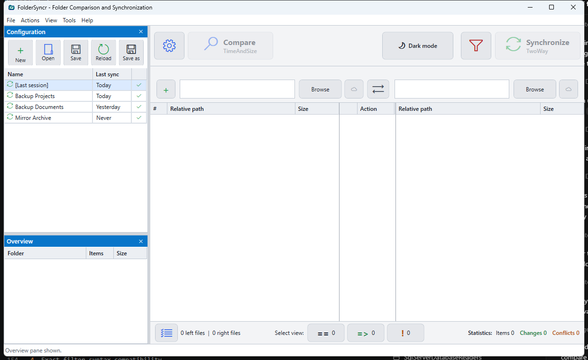
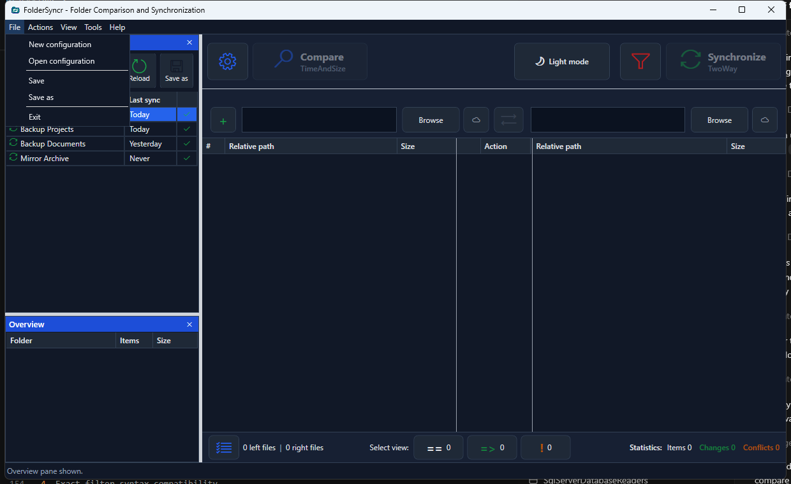
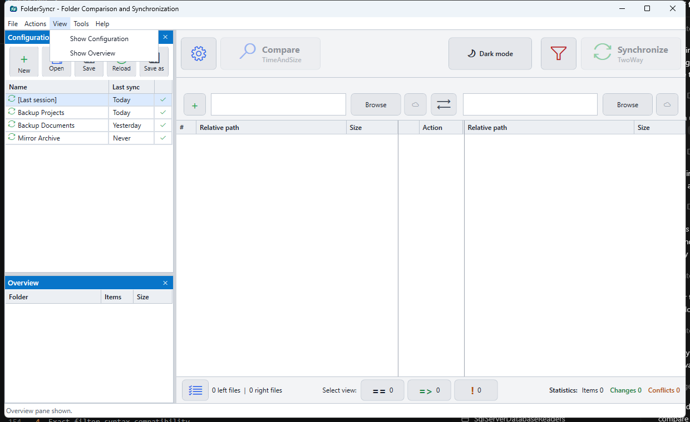
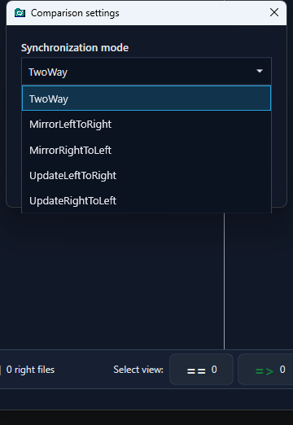

FolderSyncr User Guide
FolderSyncr compares two folders, previews every planned operation, and synchronizes only after you review the result.
This HTML guide is opened by the app from Help -> Documentation.
Main Window
These screenshots are captured from the real WPF application by the UI smoke test.




Basic Workflow
- Choose a left folder.
- Choose a right folder.
- Select the synchronization mode.
- Select the comparison method.
- Click
Compare. - Review the planned actions in the center preview grid.
- Click
Synchronizewhen the preview looks correct.
FreeFileSync Import
Use File -> Open configuration to import a FreeFileSync .ffs_gui or .ffs_batch file. FolderSyncr reads the first left/right folder pair, supported comparison settings, supported synchronization mode, and include/exclude filters.
Use Tools -> Open FreeFileSync log to import a FreeFileSync JSON result or log file. JSON results show the synchronization result, start time, duration, errors, warnings, processed item counts, processed byte counts, and referenced log file.
FolderSyncr Configurations
Use File -> Save or Save as to store the current folder pair, sync mode, compare method, filters, and theme as a .foldersyncr.json file.
Use File -> Open configuration to reopen it later, and File -> Reload configuration to discard local changes and load the current file again.
Synchronization Modes
TwoWay: copies the newer file to the older or missing side.MirrorLeftToRight: makes the right folder match the left folder, including deletes on the right.MirrorRightToLeft: makes the left folder match the right folder, including deletes on the left.UpdateLeftToRight: copies missing or newer files from left to right without deleting right-only files.UpdateRightToLeft: copies missing or newer files from right to left without deleting left-only files.
Compare Methods
TimeAndSize: fast comparison using file length and last-write timestamp.ContentHash: slower comparison using SHA-256 hashes.SizeOnly: compares only file length, useful when modification times are unreliable.
Filters
Filters use wildcard patterns separated by semicolons, commas, vertical bars, or new lines.
*.txt;*.md**/bin/**;**/obj/**;**/.git/**Use the funnel button in the top command bar to edit include and exclude filters.
Preview Actions
=>: copy from left to right.<=: copy from right to left.X<: delete from the left side.>X: delete from the right side.==: both sides are equal.!: conflict.
Safety Notes
Always run Compare before Synchronize. Mirror modes can delete files from the target side, so test with disposable folders before using FolderSyncr on important data.